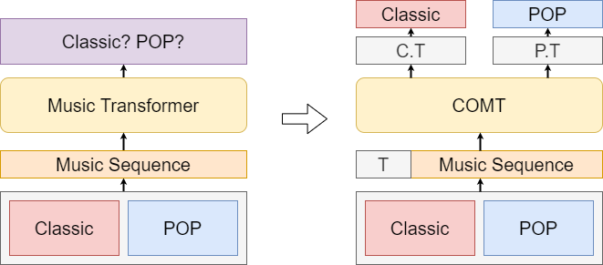

Eunyoung Bang
Eunyoung Bang I am a Master’s student in Computer Science at the University of Massachusetts Amherst with strong experience in data analysis, applied machine learning, and generative modeling. Through projects in audio-based UAV monitoring and Transformer-based music generation, I have built end-to-end ML systems grounded in rigorous data exploration, feature engineering, and statistical evaluation. I am passionate about developing scalable, reliable, and user-centered software that transforms data into actionable insights.
UAV Velocity Prediction Using Audio data
An audio-based ML system for UAV velocity prediction using acoustic features. Trained CNN and traditional ML models with MFCC and Mel-spectrogram inputs on 2,357 samples (80/10/10 split), achieving 100% accuracy and F1-score. Published at IEEE IRC 2022.

Symbolic Music Generating Using Quasi-logarithmic Encoding
Developed a Transformer-based symbolic music generation model using quasi-logarithmic time encoding to address the long-sequence limitation of conventional MIDI-like representations. The proposed encoding significantly reduced token length by up to 18%, compressing sequences from over 22,000 tokens to approximately 20,000 tokens, while preserving musical structure and quality.

A Symbolic Music Generation using Genre Information
Developed a conditional symbolic music generation system based on Transformer models that incorporates genre information as control tokens. Designed a genre-aware encoding scheme and trained the model on classical and pop music datasets to generate musically consistent compositions across multiple styles. Evaluated generation quality using statistical metrics, demonstrating improved genre fidelity and structural coherence compared to baseline models.
